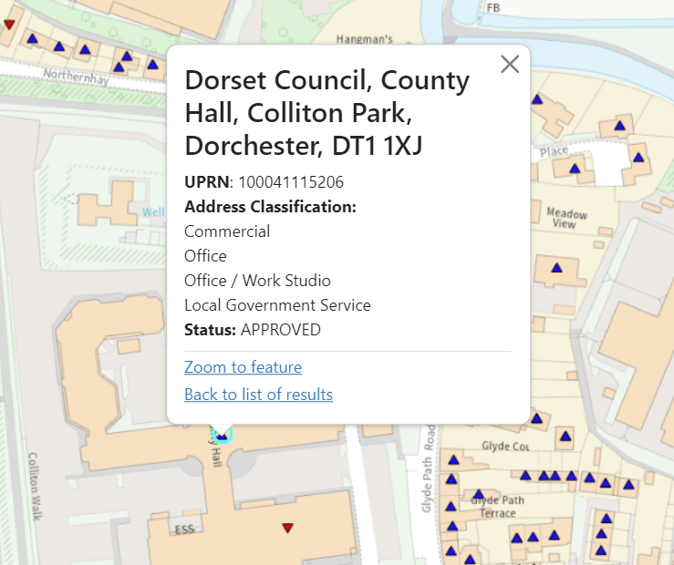
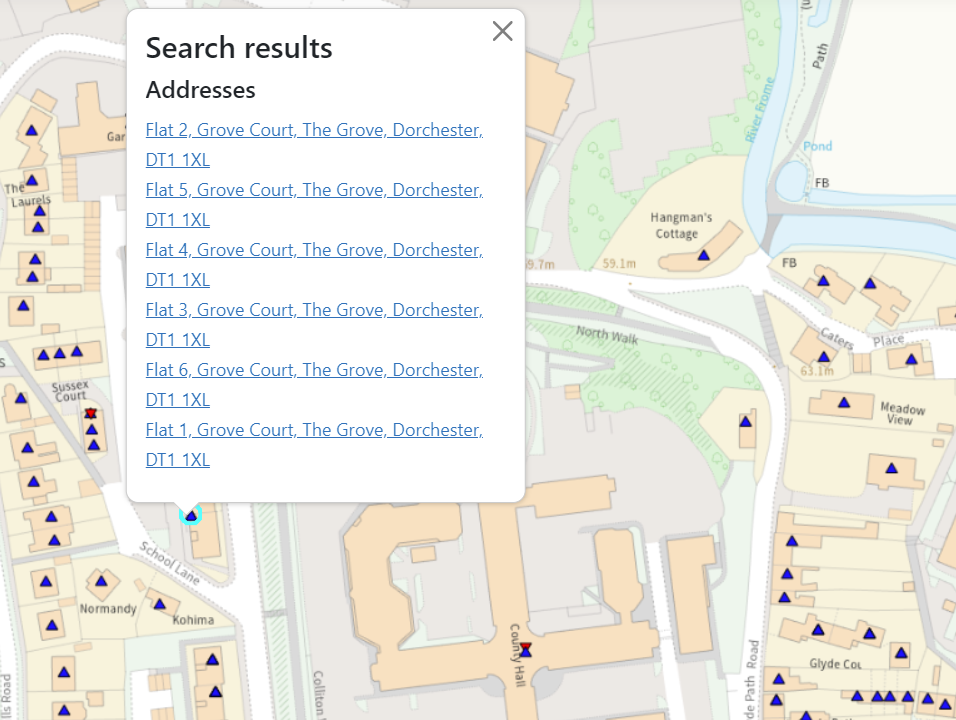

Layers¶
Layers are the bedrock of GIFramework Maps. Without layers, your maps are basically useless.
Layers are pretty configurable, and have lots of various options, some of which are quite complex to set properly. For this reason, you should consider using the management interface if you can.
Relevant tables¶
| Table Name | Description |
|---|---|
| Layer | Basic details about a published layer and how it can be used |
| LayerSource | Basic details about the source of a layer, including the type (TileWMS, XYZ etc.) and its attribution |
| LayerSourceOption | Contains the details about where a layer comes from and the options that will be applied to it |
| LayerSourceType | Lookup list describing the types of layers available. This should not be edited as it is tied directly to the application code |
| CategoryLayer | Mapping between layers and the categories they are added to |
Adding a layer¶
Layers have two main parts to them, the Layer, and the Layer Source. When you add a layer, the first thing you do is define the Layer Source.
LayerSource¶
The LayerSource table contains very basic information about the layer.
Name- A friendly name for administrators.Description- A basic description of the layer. This is shown to end users when the layer has no other description metadata available from source (see more about layer metadata below)LayerSourceTypeId- TheIdof the type of layer from theLayerSourceTypetable. This identifies the type of layer source this is. See LayerSourceType details below for more information.AttributionId- TheIdof the relevantAttributionthat will be applied to this layer. Learn more about attributions in the attributions documentation
LayerSourceOption¶
The LayerSourceOption table contains the majority of the technical information required to show a layer. It is a one-to-many table, so one LayerSource can have many linked LayerSourceOptions, depending on the requirements of the layer. It is a simple key/value store with the following columns:
Name- This is the key, and should be set to one of the following understood values:urlparamscswendpointprojectiontilegrid
Value- This is the value. See below for details on what this should containLayerSourceId- TheIdof the relevantLayerSourcethat this option applies to
XYZ Layers¶
The only required option required for XYZ layers is url. This should be set to the URL endpoint for the service, with templates for the X, Y and Z portions. The provider normally provides this for you.
Example
https://api.os.uk/maps/raster/v1/zxy/layer/{z}/{x}/{y}.png
This assumes the layer is provided in the standard Spherical Mercator EPSG:3857 projection. If the service is providing tiles in a different projection, see the advanced configuration section below.
WMS layers¶
For WMS layers (TileWMS or ImageWMS), you need a minimum of url and params set.
url
This should be set to the 'base' url of the WMS service. This is normally provided to you by the service, and will look something like https://<service-url>/wms
params
This is a JSON object of additional parameters that are applied to the layer.
The params object should at a minimum contain the following
{
"LAYERS": "LAYERNAME",
"FORMAT": "image/png", /*replace with required format*/
"TILED":"true"
}
These parameters will be used by OpenLayers to make appropriate requests to the service. Additional parameters as required by the service can be added be appending them onto the JSON object.
Common additional parameters you may want to use include:
CQL_FILTER- Will apply a CQL filter to the layerSTYLES- Will set the style of the layer to a specific style available to the serverAUTHKEY- If the service uses AUTHKEY authentication (or any other type of key based authentication)
Warning
Incorrectly formatting this JSON object can result in the layer or the entire map failing to load correctly. Edit with caution.
Other options¶
projection- If the projection is anything other than EPSG:3857, set it here. For WMS based layers, this is enough. For XYZ layers, see the section on XYZ reprojectioncswendpoint- An endpoint to retrieve a CSW Metadata document, describing the layer. The metadata document should use Dublin Core and will be available via the 'i' button next to the layer name in the layer control.
Layer¶
A layer first requires a layer source to be created that defines where the layer comes from.
Once this has been created, the layer table has the following fields to fill in:
Name- The friendly name that will appear in the layer controlLayerSourceId- TheIdfrom theLayerSourcetableBoundId- An optionalIdfrom theBoundtable that defines what the max extent of this layer is. Setting this prevents GIFramework Maps from requesting tiles or doing feature requests outside of the set bounds. This improves performance and efficiency, but is not required. Leave blank for no restrictionMaxZoom- The maximum zoom this layer will be turned on for, for example if set to 15, the layer will turn off once you zoom in past level 15. Set to blank for no restrictionMinZoom- As above, but the other way round, for example if set to 12, the layer will turn off once you zoom out past level 12ZIndex- This is the 'layer order' on the map. Higher numbers will, by default, appear above lower numbers when both layers are turned on. For things like Aerial Photography, this should generally be set very low (such as -500). Leave blank for default of 0DefaultOpacity- The default opacity (or transparency) of the layer between 0 (invisible) and 100 (opaque). Leave blank for default of 100DefaultSaturation- The default saturation of the layer between 0 (greyscale) and 100 (full colour). Leave blank for default of 100InfoTemplate- The template for what appears when you select a single map feature.. See Info Templates below for more informationInfoListTitleTemplate- The template for what appears when you click multiple items and are presented with a list of features. See Info Templates below for more informationQueryable- A Boolean indicating whether the user is allowed to query (info click) this layerDefaultFilterEditable- A Boolean indicating if the user is allowed to edit any filters already applied to the layer in the layer sourceFilterable- A Boolean indicating if the user is allowed to apply filters to this layerProxyMapRequests- A Boolean indicating if all GetMap requests should be proxied via the application proxy. Only use this if a remote layer can't handle CORS requests (errors will appear in the console and layer control when using this layer if this is the case). See Proxying for more detailsProxyMetaRequests- As above, but related to all metadata and query requests, such asGetCapabilitiesandGetFeatureInfo. See Proxying for more details
Info Templates¶
Info templates control how the user see's data when they click an item on the map. There are two info templates used by GIFramework Maps.
InfoTemplate- The template for what appears when you select a single map feature

InfoListTitleTemplate- The template for what appears when you select multiple map features and are presented with a list of features

InfoTemplates use a system called nunjucks for templating. You can read their documentation or the section below for advanced uses. For basic uses, you simply write standard HTML, and use the placeholder {{COLUMN_NAME}} to inject attributes into the template.
Example
Template (assuming there are attributes called ADDRESS and UPRN):
<h1>{{ADDRESS}}</h1><p><strong>UPRN:</strong> {{UPRN}}</p>
Output:
<h1>1 Somewhere Drive, Someplace, SM1 1AA</h1><p><strong>UPRN: </strong> 10010101001</p>
InfoListTitleTemplates are simpler, and are designed for a single line of text with placeholders. It still uses nunjucks and the placeholder {{COLUMN_NAME}}, but should be kept simple as there may be many results listed.
Warning
Avoid using HTML in an InfoListTitleTemplate. The template is injected into an <a> tag within a <li> tag, so adding further HTML may cause unexpected results.
Example
Template (assuming there is an attribute called ADDRESS):
Address: {{ADDRESS}}
Output:
Address: 1 Somewhere Drive, Someplace, SM1 1AAAddress: 2 Somewhere Drive, Someplace, SM1 1AAAddress: 3 Somewhere Drive, Someplace, SM1 1AA
CategoryLayer¶
The CategoryLayer table defines which layers are available in which categories.
LayerId- TheIdfrom theLayertableCategoryId- TheIdfrom theCategorytableSortOrder- The position this layer should appear within this category
LayerSourceType¶
There are currently 3 supported layer types in GIFramework Maps. More may be added in the future.
XYZ¶
The XYZ source is used for tile data that is accessed through URLs that include a zoom level and tile grid x/y coordinates. Examples include OpenStreetMap and OpenCycleMap.
TileWMS¶
The TileWMS source is used for WMS layers that are provided 'tiled', normally in 256px squares.
This is normally the best option, as it is more efficient and quicker, and can be cached by the users browser, but it can sometimes have issues with labels, or some services might not provide it. In these cases, use ImageWMS.
ImageWMS¶
The ImageWMS source is used for WMS layers that are provided 'untiled', so a single image is returned for the entire map screen. Normally you would choose TileWMS when available, but ImageWMS is particularly good if you have labels, or, if the layer is very complex, a single tile can load quicker than many smaller tiles.
Advanced configuration¶
Advanced templating¶
There are a number of advanced features built into the templating engine to allow for some smart customisation.
Date formatting¶
You can apply custom date formatting to datetime attributes to make them more user friendly.
Warning
This is a custom extension to nunjucks and not part of the standard nunjucks templating engine
To apply basic datetime formatting, simply add | date after your attribute name. For example {{DATE_ATTRIBUTE | date}} will attempt to render the attribute DATE_ATTRIBUTE using the toLocaleDateString() JavaScript function. In en-GB locales this would convert the ISO date 2023-02-07T17:10:00.000Z to 07/02/2023.
You can also apply custom formatting by passing a format string to the date function. For example {{DATE_ATTRIBUTE | date('yyyy')}} will convert the ISO date 2023-02-07T17:10:00.000Z to 2023. This custom formatting is applied using a library called luxon, who provide a table of tokens you can use.
Examples
Assuming an attribute called DATE_ATTRIBUTE with the value 2023-02-07T17:10:00.000Z (Feb 7th, 2023 at 17:10)
{{DATE_ATTRIBUTE | date}}07/02/2023{{DATE_ATTRIBUTE | date('yyyy')}}2023{{DATE_ATTRIBUTE | date('ccc dd LLLL yyyy T')}}Tuesday 07 February 2023 17:10
Conditionals¶
You can use basic if statements to conditionally show/hide content in a template or render it in a different way.
Info
You can read the full documentation on if statements in nunjucks in their documentation
If statements are very simple and flexible. A basic example is
{% if attribute === 'something' %}
It is something
{% endif %}
attribute is equal to 'something'. Everthing between the tags can include placeholders and HTML as normal.
For example, the following will wrap the STATUS attribute in a <span> with the class text-danger (rendering it as red text) if the STATUS is 'Closed', otherwise it will not wrap it in anything.
{% if STATUS === 'Closed' %}
<span class="text-danger">{{STATUS}}</span>
{% else %}
{{STATUS}}
{% endif %}
Everything else¶
There are many more helpers available. The best way to find out more is to read the nunjucks templating documentation.
Some useful ones you might consider:
- Math - Perform simple math operations
- capitalize - Make the first letter uppercase, the rest lower case
- int - Convert the value into an integer. If the conversion fails 0 is returned.
- lower - Convert string to all lower case
- round - Round a number
- truncate - Return a truncated copy of the string
- upper - Convert the string to upper case
XYZ reprojection¶
XYZ layers can be provided in different projections. To make use of on the fly reprojection, you need to provide an appropriate tilegrid option, describing the resolutions and origins of the XYZ layer. The service provider should be able to provide this.
Example
The `tilegrid' for British National Grid EPSG:27700 is
{
"resolutions": [896.0, 448.0, 224.0, 112.0, 56.0, 28.0, 14.0, 7.0, 3.5, 1.75],
"origin": [-238375.0, 1376256.0]
}